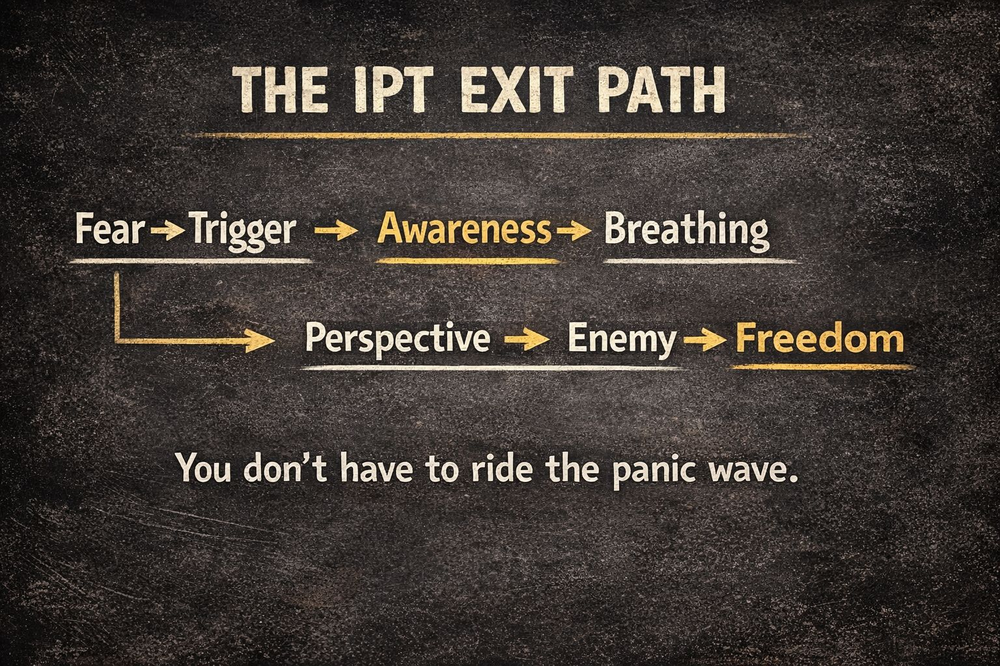

Here’s what each stage means.
This is the spark.
Something in the information stream signals danger to identity or survival:
Your nervous system reacts before your reasoning mind. Heart rate rises, attention narrows, and tribal instincts wake up.
IPT observation: Most outrage content starts here on purpose.
This is the pattern recognition moment.
Instead of reacting instantly, you notice:
That awareness already weakens the manipulation because the brain shifts from reflex mode → observation mode.
It’s like turning on the lights in a haunted house. 👁️
Now you regulate the nervous system itself. Identity panic is a physiological state, not just an opinion.
Slow breathing:
Even three slow breaths can interrupt the escalation loop.
Now the mind reopens.
Questions become possible:
Perspective restores complex thinking. Outrage systems rely on simplified narratives. Perspective dissolves those.
This is the real goal.
Freedom means: You are no longer compelled by the panic cycle.
You can:
The outrage machine loses power because your attention is no longer captured.
Identity Panic Toolkit isn’t about winning arguments. It’s about breaking panic loops.
When enough people do that, the outrage economy starves.
You don’t have to ride the panic wave. 🌊